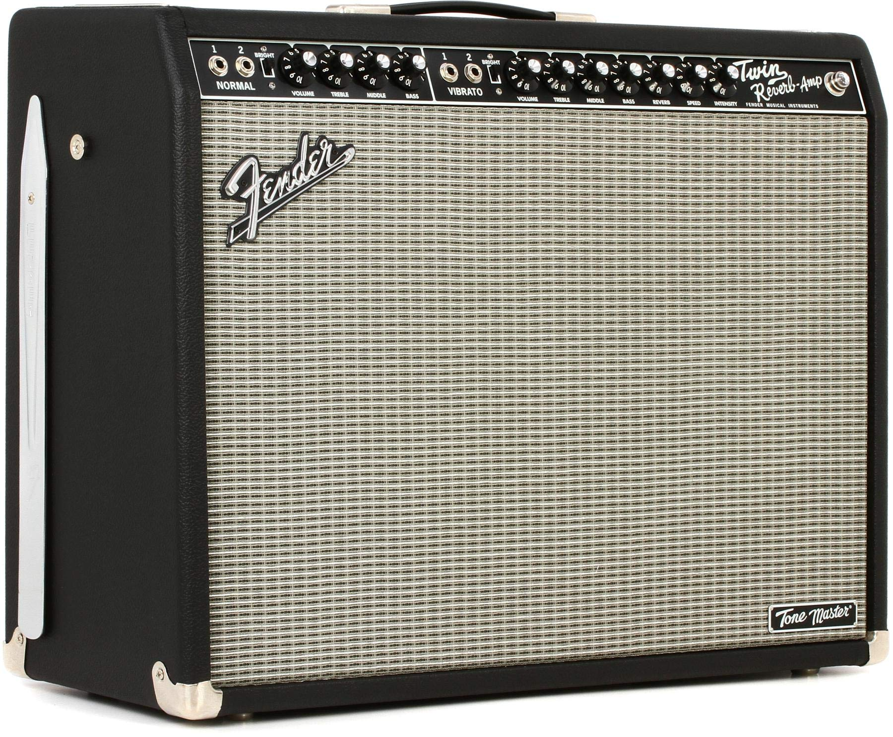
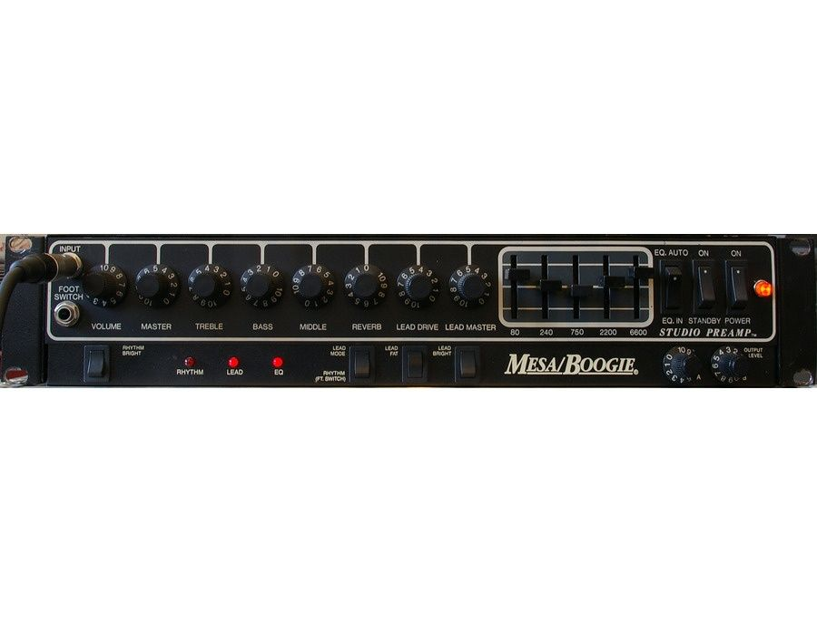

The Fender Twin Reverb is a classic tube amplifier that has been used by many legendary guitarists over the years. The amplifier was introduced in the 1960s and quickly became a favorite of many players due to its clean, warm sound and ability to handle high volume levels without distortion.

Kurt Cobain of Nirvana was known to use a Fender Twin Reverb during many of his live performances and recordings. The amplifier played a crucial role in shaping the sound of Nirvana and was an integral part of the band's signature sound. Cobain's use of the Twin Reverb allowed him to achieve a clean, yet powerful tone that cut through the mix and provided the perfect foundation for his distorted guitar sound.
Kurt Cobain of Nirvana was known to use a Fender Twin Reverb during many of his live performances and recordings. The amplifier played a crucial role in shaping the sound of Nirvana and was an integral part of the band's signature sound. Cobain's use of the Twin Reverb allowed him to achieve a clean, yet powerful tone that cut through the mix and provided the perfect foundation for his distorted guitar sound.
The Mesa Boogie is a compact and versatile tube amplifier that offers a wide range of tones and features. Cobain used the amplifier on some of Nirvana's recordings and live performances, including the famous "MTV Unplugged in New York" performance.

The Mesa Boogie's tonal versatility and ability to handle distortion and effects pedals made it a popular choice among guitarists, and Cobain was no exception. The amplifier's ability to produce both clean and distorted tones allowed Cobain to achieve the dynamic sound that was a hallmark of Nirvana's music. The Mesa Boogie Studio .22 remains a popular amplifier among guitarists to this day for its versatility and tonal capabilities.